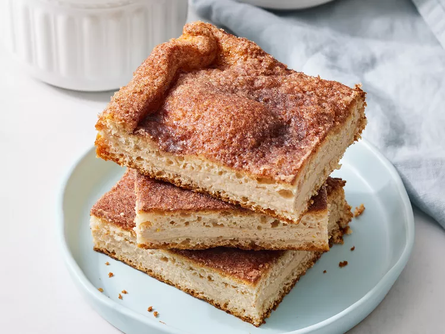

Churro Cheesecake Bars

Description
This delicious churro cheesecake is topped with cinnamon sugar and cut into bars for a sweet and creamy treat. Serve with Mexican cajeta or dulce de leche for extra caramel flavor.
Ingredients
- cooking spray
- 1/2 cup white sugar
- 1 tablespoon cinnamon
- 2 (7.5-ounce) packages brown sugar and cinnamon spreadable cream cheese, softened
- 1 large egg
- 2 teaspoons vanilla extract
- 1 teaspoon orange zest (optional)
- 2 (8-ounce) packages refrigerated crescent sheets (2 sheets)
- 1/4 cup salted butter, melted
- 2 tablespoons cajeta (Mexican caramel), warmed (Optional)
Steps
- Gather all ingredients. Preheat the oven to 350 degrees F (or 175 degrees C). Grease and flour a 9x13-inch baking pan.
- Combine sugar and cinnamon in a small bowl. Sprinkle ½ of the sugar mixture evenly in the bottom of the pan.
- Place one crescent sheet in the pan, trimming to fit as needed.
- To make the filling: Beat cream cheese, egg, vanilla, and orange zest together in a medium bowl with an electric mixer on medium speed until smooth.
- Spread cream cheese filling evenly over crescent crust in pan.
- Gently lay the remaining crescent sheet over the filling.
- Pour melted butter over the top.
- Sprinkle remaining sugar mixture evenly over top.
- Bake until golden brown, about 30 minutes. Cool slightly. Cut into bars. Serve warm or chill and serve within 24 hours. If desired, drizzle with Cajeta just before serving.
Home